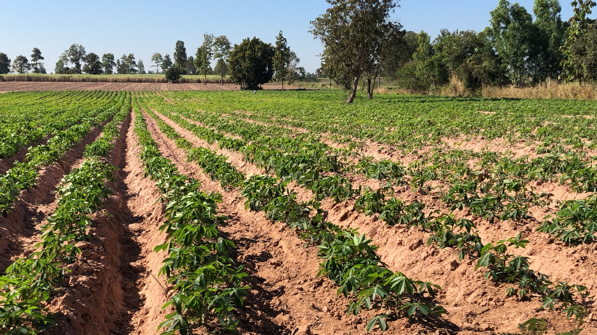
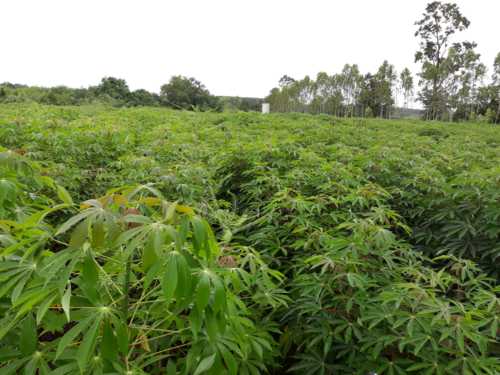
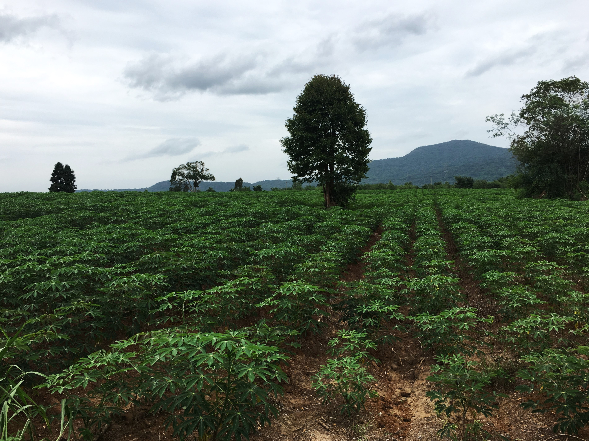
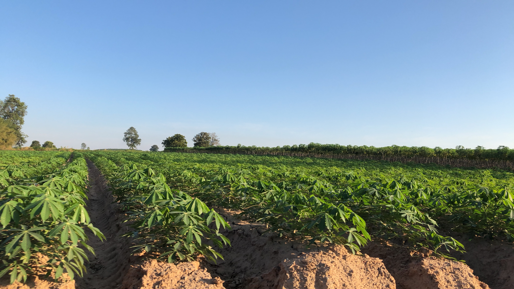

ที่มาของโครงการ
มันสำปะหลังเป็นหนึ่งในพืชเศรษฐกิจที่สาคัญของประเทศไทย เป็นวัตถุดิบในอุตสาหกรรมการผลิตแป้งมัน ในปัจจุบันประเทศไทยสมาคมเป็นอันดับหนึ่งในการส่งออกสินค้ามันสำปะหลัง โดยมีพื้นที่ปลูกแป้งมันสำปะหลังทั้งประเทศ 10 ล้านไร่ ซึ่งกระจายอยู่เกือบทุกภาคของประเทศ และ 7-8 แสนครอบครัว ข้อมูลจากดาวเทียมเป็นเทคโนโลยีที่สามารถประเมินพื้นที่ปลูกและประเมินอายุได้อย่างมีประสิทธิภาพและทันต่อสถานการณ์ปัจจุบัน ซึ่งจะสามารถต่อยอดไปถึงการประเมินปริมาณผลผลิตมันสำปะหลังให้ใกล้เคียงความเป็นจริงได้มากที่สุด



